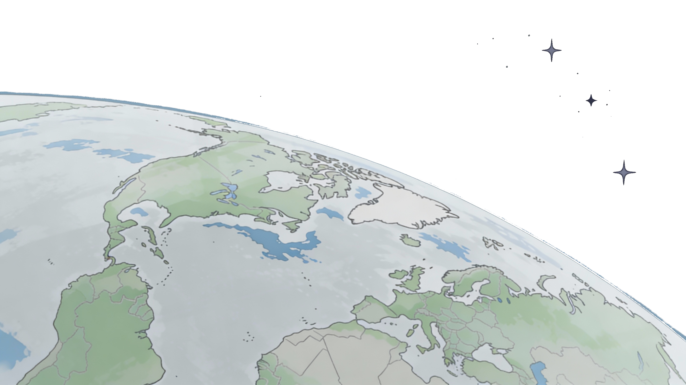

iXMaps Chat
Chat with your map using natural language
Settings
Theme Editor
Loading editor...
Theme Configurator
Loading configurator...
Facets
Loading facets...
Using Simple Parser
Data Table
Loading table...

iXmaps
Interactive Mapping Framework
iXmaps is a powerful JavaScript framework for creating interactive web maps with advanced data visualization capabilities.
It supports multiple data formats, dynamic theming, and real-time data updates.
Loading map...